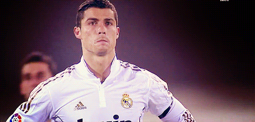

Cristiano Ronaldo:
Nacido en la pobreza del el barrio de Funchal en Madeira (Portugal) Cristiano Ronaldo ha pasado de vivir en una vivienda social a ser la gran estrella del fútbol mundial que es hoy en día.
Su padre, Dennis Aveiro, fallecido en 2005 por una crisis renal, era alcohólico y la situación en su casa era muy complicada por lo que pasaba la mayor
parte del tiempo en la calle jugando al fútbol. pero gracias a sus esfuerzos hoy es uno de los mejores del futbol y toda la biografia esta dando click a la imagen.
